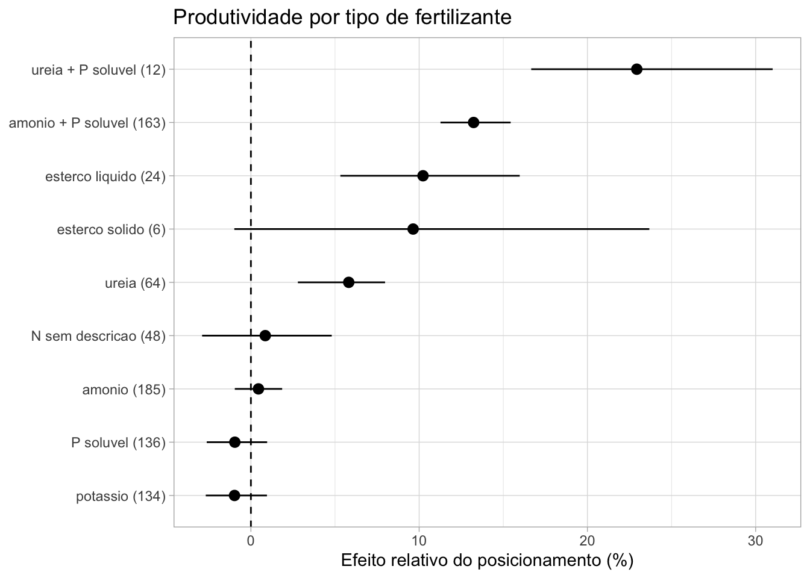
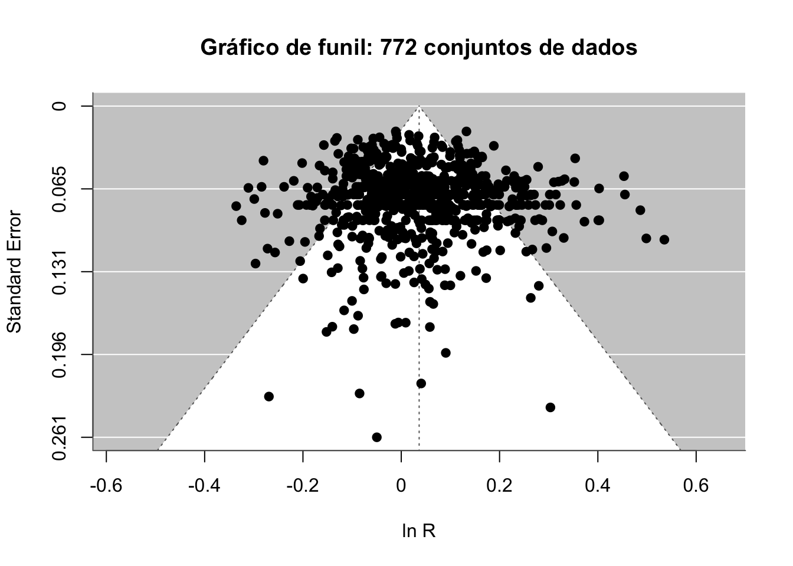
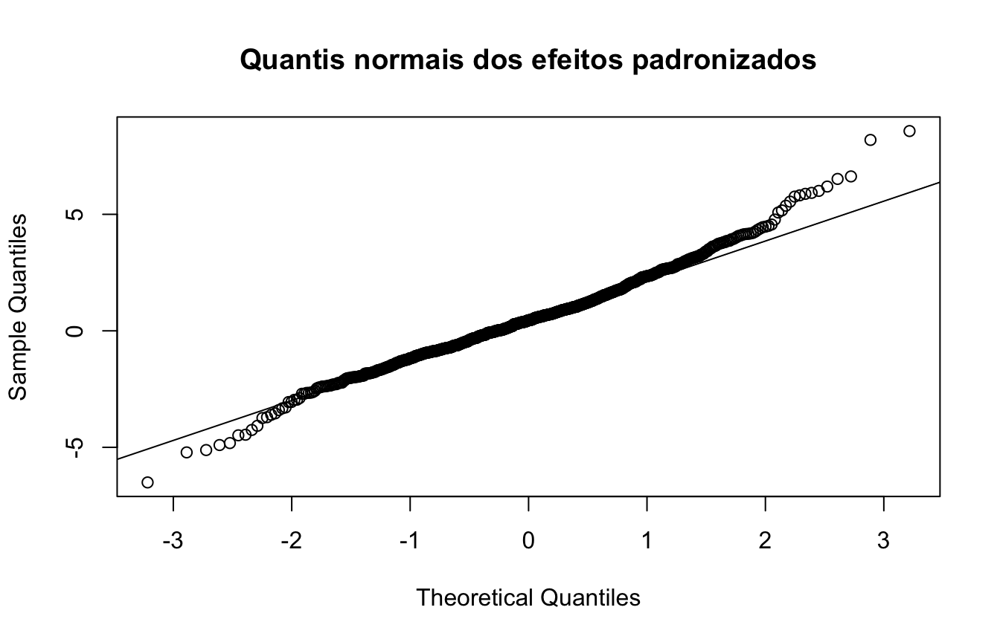

Reproduzindo a análise de produtividade de Nkebiwe et al. (2016) com dados simulados
Objetivos
Entender a pergunta, os dados e os métodos de uma metanálise publicada em ciência do solo e fitotecnia (Nkebiwe et al. 2016).
Calcular a razão de resposta (ln R) por conjunto de dados, o efeito global e o efeito relativo por subgrupo (cultura, técnica, profundidade e tipo de fertilizante).
Fazer a análise de sensibilidade e checar o viés de publicação.
Discutir um problema do artigo: os conjuntos de dados de um mesmo estudo não são independentes.
Dados simulados
Os dados brutos do artigo (1022 conjuntos de dados) estão no apêndice online da revista e não estavam acessíveis quando este exemplo foi preparado. Os dados abaixo foram gerados por R/gerar-dados-fertilizantes.R: o número de estudos (39), de conjuntos de dados (772) e a distribuição por cultura, técnica e tipo de fertilizante seguem o artigo, e os efeitos médios foram ajustados para ficar próximos das Figuras 2 a 5. Os resultados devem se parecer com os publicados, mas não coincidir. Quando você tiver os dados reais, basta trocar o CSV (veja o final da página).
O artigo
Pergunta. A adubação nitrogenada e fosfatada costuma ser feita a lanço (broadcast), sem garantir que o nutriente esteja no lugar e no momento certos para as raízes. O posicionamento localizado do fertilizante (em banda, sulco, ponto, perto da semente ou profundo) aumenta a produtividade e a absorção de nutrientes em relação ao lanço?
Desenho. Cada conjunto de dados é um par de médias de um ensaio de campo: fertilizante posicionado (tratamento) e fertilizante a lanço (controle), com mesma fonte e dose. Para produtividade foram usados 772 conjuntos de 39 estudos, publicados entre 1982 e 2015. O artigo faz três metanálises (produtividade, concentração e conteúdo de nutrientes); aqui reproduzimos só a de produtividade.
Métodos principais:
Medida de efeito: razão de resposta, \(\ln R = \ln(\bar{X}_E / \bar{X}_C)\), com variância \(V_{\ln R} = \dfrac{S_E^2}{N_E \bar{X}_E^2} + \dfrac{S_C^2}{N_C \bar{X}_C^2}\). Os resultados são expressos como efeito relativo do posicionamento (RPE): \((R - 1) \times 100\%\).
DP faltantes foram imputados: multiplicou-se a média do conjunto pelo CV médio dos conjuntos que reportaram o DP (Furukawa et al. 2006).
Modelo: efeitos aleatórios no MetaWin, com variância pooled (método de DerSimonian-Laird) e IC 95% bootstrap corrigido para viés (999 reexecuções) (Rosenberg, Adams, e Gurevitch 2000).
Subgrupos: cultura, técnica de posicionamento, profundidade e tipo de fertilizante. Grupos com menos de dois conjuntos de dados foram excluídos.
Sensibilidade: sem outliers (±3 DP) e sem os DP imputados.
Viés de publicação: gráfico de funil, gráfico de quantis normais e fail-safe number de Rosenthal.
Cada linha é um conjunto de dados: media_posic, dp_posic e n_posic para o fertilizante posicionado, e media_lanco, dp_lanco e n_lanco para o lanço. Note que muitos DP estão faltando.
conjunto yi vi
1 N01-001 -0.0222 0.0010
2 N01-002 0.0593 0.0100
3 N02-001 0.1324 0.0062
4 N02-002 0.0749 0.0077
5 N02-003 0.1884 0.0010
6 N03-001 0.1250 0.0022
# Conferindo com a fórmula do artigo para o primeiro conjuntowith(fert[1, ], dp_posic^2/ (n_posic * media_posic^2) + dp_lanco^2/ (n_lanco * media_lanco^2))
[1] 0.0009711996
dat$vi[1]
[1] 0.0009711996
Passo 3: efeito global
O MetaWin estima a variância entre estudos pelo método de DerSimonian-Laird, que no metafor é method = "DL".
m_global <-rma(yi, vi, data = dat, method ="DL")m_global
Random-Effects Model (k = 772; tau^2 estimator: DL)
tau^2 (estimated amount of total heterogeneity): 0.0095 (SE = 0.0008)
tau (square root of estimated tau^2 value): 0.0974
I^2 (total heterogeneity / total variability): 72.30%
H^2 (total variability / sampling variability): 3.61
Test for Heterogeneity:
Q(df = 771) = 2783.5884, p-val < .0001
Model Results:
estimate se zval pval ci.lb ci.ub
0.0364 0.0044 8.3342 <.0001 0.0279 0.0450 ***
---
Signif. codes: 0 '***' 0.001 '**' 0.01 '*' 0.05 '.' 0.1 ' ' 1
Como no exemplo anterior, sorteamos os conjuntos de dados com reposição 999 vezes. Para ficar rápido, usamos a estimativa de DerSimonian-Laird escrita à mão.
dl <-function(yi, vi) { w <-1/ vi mu_fe <-sum(w * yi) /sum(w) Q <-sum(w * (yi - mu_fe)^2) C <-sum(w) -sum(w^2) /sum(w) tau2 <-max(0, (Q - (length(yi) -1)) / C) wr <-1/ (vi + tau2)sum(wr * yi) /sum(wr)}ic_boot <-function(yi, vi, B =999) { est <-dl(yi, vi) b <-replicate(B, { i <-sample(length(yi), replace =TRUE)dl(yi[i], vi[i]) }) z0 <-qnorm(mean(b < est))quantile(b, pnorm(2* z0 +qnorm(c(0.025, 0.975))), names =FALSE)}set.seed(2016)ci <-ic_boot(dat$yi, dat$vi)c(RPE =rpe(dl(dat$yi, dat$vi)), inf =rpe(ci[1]), sup =rpe(ci[2]))
RPE inf sup
3.709308 2.679460 4.582812
O efeito é positivo e o IC bootstrap não inclui zero: o posicionamento aumenta a produtividade em relação ao lanço. O artigo obteve 3,7% (IC95% 3,1 a 4,3).
Passo 4: subgrupos
O artigo repete a análise em cada nível de quatro variáveis. Vamos escrever uma função que devolve o efeito relativo e o IC bootstrap para cada grupo, excluindo os grupos com menos de dois conjuntos de dados.
por_grupo <-function(dat, var, B =999) { dat |>group_by(grupo = .data[[var]]) |>filter(n() >=2) |>group_modify(function(d, chave) { ci <-ic_boot(d$yi, d$vi, B)tibble(n =nrow(d), RPE =rpe(dl(d$yi, d$vi)),inf =rpe(ci[1]), sup =rpe(ci[2])) }) |>ungroup() |>mutate(variavel = var, signif = inf >0| sup <0)}grafico_grupo <-function(res, titulo) { res |>mutate(rotulo =paste0(grupo, " (", n, ")"),rotulo =fct_reorder(rotulo, RPE)) |>ggplot(aes(RPE, rotulo)) +geom_vline(xintercept =0, linetype ="dashed") +geom_pointrange(aes(xmin = inf, xmax = sup)) +labs(x ="Efeito relativo do posicionamento (%)", y =NULL, title = titulo)}
grafico_grupo(res_fert, "Produtividade por tipo de fertilizante")

Como no artigo, dois grupos são considerados diferentes se seus IC95% não se sobrepõem. Veja quais fertilizantes se destacam.
A heterogeneidade entre grupos
Além da sobreposição dos IC, podemos testar formalmente se a variável explica parte da heterogeneidade (o \(Q_M\) do artigo) com um modelo com moderadora categórica.
O artigo verifica se o resultado muda ao (1) excluir outliers (efeitos a mais de 3 DP da média) e (2) excluir os conjuntos com DP imputado.
limite <-mean(dat$yi) +c(-3, 3) *sd(dat$yi)sem_outlier <- dat |>filter(yi > limite[1], yi < limite[2])so_reportado <- dat |>filter(!dp_imputado)sens <-tribble(~cenario, ~dados,"Todos os dados", dat,"Sem outliers (±3 DP)", sem_outlier,"Só DP reportado", so_reportado,"Só DP imputado", dat |>filter(dp_imputado)) |>mutate(res =map(dados, \(d) { m <-rma(yi, vi, data = d, method ="DL")tibble(k = m$k, RPE =rpe(coef(m)), inf =rpe(m$ci.lb), sup =rpe(m$ci.ub)) })) |>select(-dados) |>unnest(res)sens
# A tibble: 4 × 5
cenario k RPE inf sup
<chr> <int> <dbl> <dbl> <dbl>
1 Todos os dados 772 3.71 2.82 4.60
2 Sem outliers (±3 DP) 767 3.43 2.57 4.30
3 Só DP reportado 445 2.03 0.879 3.19
4 Só DP imputado 327 6.03 4.71 7.37
No artigo, tirar os 17 outliers mudou muito pouco o resultado (3,6%), e não houve diferença entre todos os dados (3,7%), só os DP reportados (3,1%, n = 444) e só os DP imputados (4,6%, n = 328). Veja se o mesmo acontece aqui.
Viés de publicação
O artigo usa gráfico de funil, quantis normais e o fail-safe number de Rosenthal (Rosenberg 2005).
funnel(m_global, yaxis ="sei", xlab ="ln R",main ="Gráfico de funil: 772 conjuntos de dados")

qqnorm(dat$yi /sqrt(dat$vi), main ="Quantis normais dos efeitos padronizados")qqline(dat$yi /sqrt(dat$vi))

# Fail-safe number de Rosenthal; tolerância 5n + 10nr <-fsn(yi, vi, data = dat, type ="Rosenthal")nr$fsnum
[1] 58939
5*nrow(dat) +10
[1] 3870
O \(N_R\) muito maior que \(5n + 10\) indica que o resultado é robusto a estudos não publicados com efeito nulo. O artigo obteve \(N_R\) = 120.085.
Dois testes complementares:
regtest(m_global) # Egger
Regression Test for Funnel Plot Asymmetry
Model: mixed-effects meta-regression model
Predictor: standard error
Test for Funnel Plot Asymmetry: z = 1.3046, p = 0.1920
Limit Estimate (as sei -> 0): b = 0.0202 (CI: -0.0056, 0.0460)
trimfill(m_global) # trim-and-fill
Estimated number of missing studies on the left side: 0 (SE = 15.6839)
Random-Effects Model (k = 772; tau^2 estimator: DL)
tau^2 (estimated amount of total heterogeneity): 0.0095 (SE = 0.0008)
tau (square root of estimated tau^2 value): 0.0974
I^2 (total heterogeneity / total variability): 72.30%
H^2 (total variability / sampling variability): 3.61
Test for Heterogeneity:
Q(df = 771) = 2783.5884, p-val < .0001
Model Results:
estimate se zval pval ci.lb ci.ub
0.0364 0.0044 8.3342 <.0001 0.0279 0.0450 ***
---
Signif. codes: 0 '***' 0.001 '**' 0.01 '*' 0.05 '.' 0.1 ' ' 1
Atenção: os conjuntos de dados não são independentes
O artigo trata os 772 conjuntos de dados como independentes, embora venham de apenas 39 estudos (alguns estudos contribuem com dezenas de conjuntos). Conjuntos do mesmo estudo compartilham local, cultivar, manejo e autores. Isso torna o IC estreito demais. É o tema do capítulo 12: um modelo multinível com estudo e conjunto de dados como níveis aleatórios.
m_mv$sigma2 # variância entre estudos e entre conjuntos dentro do estudo
[1] 0.006015663 0.006847129
Compare a largura dos intervalos. Mesmo com efeito médio parecido, o modelo multinível reconhece que há muito menos informação independente do que 772 conjuntos de dados.
Resultado: nosso exemplo × artigo
Valores publicados para produtividade (IC95% entre parênteses quando informado), para comparação aproximada com os nossos:
Grupo
Artigo (RPE %)
Nosso exemplo
Global (n = 772)
3,7 (3,1 a 4,3)
veja o Passo 3
Milho (n = 408)
4,5 (3,6 a 5,5)
tabela de culturas
Trigo de inverno (n = 112)
9,5 (6,8 a 12,4)
tabela de culturas
Soja (n = 134)
sem efeito
tabela de culturas
Ureia + P solúvel (n = 12)
27,3
tabela de fertilizantes
Amônio + P solúvel (n = 163)
14,7 (12,9 a 17,0)
tabela de fertilizantes
Esterco líquido (n = 24)
11,6
tabela de fertilizantes
Ureia (n = 64)
11,0 (5,7 a 17,5)
tabela de fertilizantes
Amônio (n = 185)
3,8 (2,2 a 5,4)
tabela de fertilizantes
P solúvel (n = 136)
0,0 (−0,6 a 0,7)
tabela de fertilizantes
Profundidade 0 cm / 5-10 cm / >10 cm
3,9 / 3,4 / 4,1
tabela de profundidade
bind_rows(res_fert, res_cult |>filter(grupo %in%c("milho", "trigo de inverno", "soja"))) |>mutate(across(c(RPE, inf, sup), \(x) round(x, 1))) |>select(grupo, n, RPE, inf, sup)
Repita a análise global só com os conjuntos em que a cultura é milho e compare a razão de resposta com a do trigo de inverno. Eles diferem (IC95% não se sobrepõem)?
Ver solução
set.seed(10)por_grupo(dat |>filter(cultura %in%c("milho", "trigo de inverno")), "cultura")
# A tibble: 2 × 7
grupo n RPE inf sup variavel signif
<chr> <int> <dbl> <dbl> <dbl> <chr> <lgl>
1 milho 408 4.30 3.21 5.54 cultura TRUE
2 trigo de inverno 112 11.0 8.76 13.5 cultura TRUE
Exercício 2
Ajuste um modelo multinível só para o milho (estudo e conjunto como níveis aleatórios) e compare o IC com o do modelo que supõe independência.
Ver solução
milho <- dat |>filter(cultura =="milho")ind <-rma(yi, vi, data = milho, method ="DL")mv <-rma.mv(yi, vi, random =~1| estudo / conjunto, data = milho)tibble(modelo =c("Independentes", "Multinível"),RPE =rpe(c(coef(ind), coef(mv))),inf =rpe(c(ind$ci.lb, mv$ci.lb)),sup =rpe(c(ind$ci.ub, mv$ci.ub)))
O material suplementar do artigo (Tabela A.1) lista os estudos com as médias e a razão publicada (posicionado / lanço), mas sem DP nem número de repetições. Por isso ele não permite refazer a metanálise: falta a variância de cada razão. Extraímos dessa tabela as razões de produtividade (grãos, sementes, tubérculos, raízes ou hortaliças), sempre o primeiro bloco “Relative … yield” de cada estudo, em dados/nkebiwe_razoes_publicadas.csv.
Essa média sem pesos é só uma referência: cada razão tem precisão diferente, e sem a variância não há como ponderar. Compare com o efeito estimado nos dados simulados e discuta:
Valores aproximados (coluna aproximado) foram lidos de gráficos.
Cada razão já é uma média de anos, locais e doses, o que esconde a variação entre conjuntos de dados.
É exatamente o tipo de informação que o capítulo 3 manda registrar na planilha (n, média e DP por tratamento) e que, quando falta, impede a metanálise.
Usando os dados reais
Os dados completos (772 conjuntos) não estão no apêndice; seriam obtidos com os autores. Se você os tiver, monte um CSV com as mesmas colunas de dados/fertilizantes_posicionamento.csv (uma linha por conjunto de dados; DP vazio quando não reportado) e salve com o mesmo nome. Todo o código acima funciona sem alteração. Revise os nomes das categorias (cultura, tecnica, fertilizante) nos exercícios.
O que aprendemos
A razão de resposta é a medida natural quando o efeito é proporcional à produtividade, e vira o efeito relativo (%) com \((e^{\ln R} - 1) \times 100\).
A imputação de DP permite aproveitar mais estudos, mas deve ser registrada e testada na sensibilidade.
O IC bootstrap e a comparação entre subgrupos pela sobreposição dos IC são práticas comuns, mas o teste \(Q_M\) dá um critério formal.
Muitos conjuntos de dados por estudo exigem um modelo que reconheça a dependência entre eles.
Furukawa, Toshi A., Corrado Barbui, Andrea Cipriani, Paolo Brambilla, e Norio Watanabe. 2006. «Imputing missing standard deviations in meta-analyses can provide accurate results». Journal of Clinical Epidemiology 59 (1): 7–10.
Nkebiwe, Peteh Mehdi, Markus Weinmann, Asher Bar-Tal, e Torsten Müller. 2016. «Fertilizer placement to improve crop nutrient acquisition and yield: A review and meta-analysis». Field Crops Research 196: 389–401. https://doi.org/10.1016/j.fcr.2016.07.018.
Rosenberg, Michael S. 2005. «The file-drawer problem revisited: a general weighted method for calculating fail-safe numbers in meta-analysis». Evolution 59 (2): 464–68.
Rosenberg, Michael S., Dean C. Adams, e Jessica Gurevitch. 2000. MetaWin: Statistical Software for Meta-Analysis. Version 2. Sinauer Associates.
Código fonte
---title: "Exemplo 2 · Posicionamento de fertilizantes e produtividade"subtitle: "Reproduzindo a análise de produtividade de Nkebiwe et al. (2016) com dados simulados"---```{r}#| include: falsesource("R/setup.R")```::: {.callout-note}## Objetivos- Entender a pergunta, os dados e os métodos de uma metanálise publicada em ciência do solo e fitotecnia [@nkebiwe2016].- Calcular a **razão de resposta** (ln *R*) por conjunto de dados, o **efeito global** e o **efeito relativo por subgrupo** (cultura, técnica, profundidade e tipo de fertilizante).- Fazer a **análise de sensibilidade** e checar o **viés de publicação**.- Discutir um problema do artigo: os conjuntos de dados de um mesmo estudo **não são independentes**.:::::: {.callout-warning}## Dados simuladosOs dados brutos do artigo (1022 conjuntos de dados) estão no apêndice onlineda revista e **não estavam acessíveis** quando este exemplo foi preparado. Osdados abaixo foram gerados por `R/gerar-dados-fertilizantes.R`: o número deestudos (39), de conjuntos de dados (772) e a distribuição por cultura,técnica e tipo de fertilizante **seguem o artigo**, e os efeitos médiosforam ajustados para ficar próximos das Figuras 2 a 5. Os resultados devemse **parecer** com os publicados, mas não coincidir. Quando você tiver osdados reais, basta trocar o CSV (veja o final da página).:::## O artigo**Pergunta.** A adubação nitrogenada e fosfatada costuma ser feita **alanço** (*broadcast*), sem garantir que o nutriente esteja no lugar e nomomento certos para as raízes. O **posicionamento localizado** do fertilizante(em banda, sulco, ponto, perto da semente ou profundo) aumenta aprodutividade e a absorção de nutrientes em relação ao lanço?**Desenho.** Cada conjunto de dados é um par de médias de um ensaio de campo:fertilizante **posicionado** (tratamento) e fertilizante **a lanço**(controle), com mesma fonte e dose. Para produtividade foram usados 772conjuntos de 39 estudos, publicados entre 1982 e 2015. O artigo faz trêsmetanálises (produtividade, concentração e conteúdo de nutrientes); aquireproduzimos **só a de produtividade**.**Métodos principais**:1. **Medida de efeito:** razão de resposta, $\ln R = \ln(\bar{X}_E / \bar{X}_C)$, com variância $V_{\ln R} = \dfrac{S_E^2}{N_E \bar{X}_E^2} + \dfrac{S_C^2}{N_C \bar{X}_C^2}$. Os resultados são expressos como **efeito relativo do posicionamento** (RPE): $(R - 1) \times 100\%$.2. **DP faltantes** foram **imputados**: multiplicou-se a média do conjunto pelo CV médio dos conjuntos que reportaram o DP [@furukawa2006].3. **Modelo:** efeitos aleatórios no MetaWin, com variância *pooled* (método de DerSimonian-Laird) e **IC 95% bootstrap** corrigido para viés (999 reexecuções) [@rosenberg2000].4. **Subgrupos:** cultura, técnica de posicionamento, profundidade e tipo de fertilizante. Grupos com menos de dois conjuntos de dados foram excluídos.5. **Sensibilidade:** sem *outliers* (±3 DP) e sem os DP imputados.6. **Viés de publicação:** gráfico de funil, gráfico de quantis normais e *fail-safe number* de Rosenthal.## Os dados```{r}fert <-read_csv("dados/fertilizantes_posicionamento.csv", show_col_types =FALSE)glimpse(fert)```Cada linha é um conjunto de dados: `media_posic`, `dp_posic` e `n_posic` parao fertilizante posicionado, e `media_lanco`, `dp_lanco` e `n_lanco` para olanço. Note que muitos DP estão faltando.```{r}c(conjuntos =nrow(fert), estudos =n_distinct(fert$estudo),sem_dp =sum(is.na(fert$dp_posic)))fert |>count(cultura, sort =TRUE)```## Passo 1: imputar os DP faltantesO artigo calcula o CV médio dos conjuntos que reportaram o DP e o multiplicapela média de cada conjunto com DP faltante.```{r}cv_medio <- fert |>summarise(cv_posic =mean(dp_posic / media_posic, na.rm =TRUE),cv_lanco =mean(dp_lanco / media_lanco, na.rm =TRUE))cv_mediofert <- fert |>mutate(dp_imputado =is.na(dp_posic) |is.na(dp_lanco),dp_posic =coalesce(dp_posic, cv_medio$cv_posic * media_posic),dp_lanco =coalesce(dp_lanco, cv_medio$cv_lanco * media_lanco))count(fert, dp_imputado)```::: {.callout-tip}## Registre sempreGuarde uma coluna (`dp_imputado`) dizendo quais DP foram imputados. Elapermite repetir a análise sem eles, como o artigo faz na sensibilidade.:::## Passo 2: razão de resposta (ln *R*)No `metafor` a razão de resposta é a medida `"ROM"`. A variância calculadapor `escalc()` é a mesma da Equação 2 do artigo.```{r}dat <-escalc(measure ="ROM",m1i = media_posic, sd1i = dp_posic, n1i = n_posic,m2i = media_lanco, sd2i = dp_lanco, n2i = n_lanco,data = fert)dat |>select(conjunto, yi, vi) |>head()# Conferindo com a fórmula do artigo para o primeiro conjuntowith(fert[1, ], dp_posic^2/ (n_posic * media_posic^2) + dp_lanco^2/ (n_lanco * media_lanco^2))dat$vi[1]```## Passo 3: efeito globalO MetaWin estima a variância entre estudos pelo método de DerSimonian-Laird,que no `metafor` é `method = "DL"`.```{r}m_global <-rma(yi, vi, data = dat, method ="DL")m_global# Efeito relativo do posicionamento (%)rpe <-function(x) (exp(x) -1) *100c(RPE =rpe(coef(m_global)), inf =rpe(m_global$ci.lb), sup =rpe(m_global$ci.ub))```### IC 95% bootstrap corrigido para viésComo no exemplo anterior, sorteamos os conjuntos de dados com reposição 999vezes. Para ficar rápido, usamos a estimativa de DerSimonian-Laird escrita àmão.```{r}dl <-function(yi, vi) { w <-1/ vi mu_fe <-sum(w * yi) /sum(w) Q <-sum(w * (yi - mu_fe)^2) C <-sum(w) -sum(w^2) /sum(w) tau2 <-max(0, (Q - (length(yi) -1)) / C) wr <-1/ (vi + tau2)sum(wr * yi) /sum(wr)}ic_boot <-function(yi, vi, B =999) { est <-dl(yi, vi) b <-replicate(B, { i <-sample(length(yi), replace =TRUE)dl(yi[i], vi[i]) }) z0 <-qnorm(mean(b < est))quantile(b, pnorm(2* z0 +qnorm(c(0.025, 0.975))), names =FALSE)}set.seed(2016)ci <-ic_boot(dat$yi, dat$vi)c(RPE =rpe(dl(dat$yi, dat$vi)), inf =rpe(ci[1]), sup =rpe(ci[2]))```O efeito é positivo e o IC bootstrap não inclui zero: o posicionamentoaumenta a produtividade em relação ao lanço. O artigo obteve **3,7%** (IC95%3,1 a 4,3).## Passo 4: subgruposO artigo repete a análise em cada nível de quatro variáveis. Vamos escreveruma função que devolve o efeito relativo e o IC bootstrap para cada grupo,excluindo os grupos com menos de dois conjuntos de dados.```{r}por_grupo <-function(dat, var, B =999) { dat |>group_by(grupo = .data[[var]]) |>filter(n() >=2) |>group_modify(function(d, chave) { ci <-ic_boot(d$yi, d$vi, B)tibble(n =nrow(d), RPE =rpe(dl(d$yi, d$vi)),inf =rpe(ci[1]), sup =rpe(ci[2])) }) |>ungroup() |>mutate(variavel = var, signif = inf >0| sup <0)}grafico_grupo <-function(res, titulo) { res |>mutate(rotulo =paste0(grupo, " (", n, ")"),rotulo =fct_reorder(rotulo, RPE)) |>ggplot(aes(RPE, rotulo)) +geom_vline(xintercept =0, linetype ="dashed") +geom_pointrange(aes(xmin = inf, xmax = sup)) +labs(x ="Efeito relativo do posicionamento (%)", y =NULL, title = titulo)}```### Profundidade```{r}set.seed(1)res_prof <-por_grupo(dat, "profundidade")res_profgrafico_grupo(res_prof, "Produtividade por profundidade")```### Cultura```{r}#| fig-height: 6set.seed(2)res_cult <-por_grupo(dat, "cultura")grafico_grupo(res_cult, "Produtividade por cultura")```### Técnica de posicionamento```{r}#| fig-height: 6set.seed(3)res_tec <-por_grupo(dat, "tecnica")grafico_grupo(res_tec, "Produtividade por técnica")```### Tipo de fertilizante```{r}set.seed(4)res_fert <-por_grupo(dat, "fertilizante")res_fert |>arrange(desc(RPE))grafico_grupo(res_fert, "Produtividade por tipo de fertilizante")```Como no artigo, dois grupos são considerados **diferentes** se seus IC95%**não se sobrepõem**. Veja quais fertilizantes se destacam.### A heterogeneidade entre gruposAlém da sobreposição dos IC, podemos testar formalmente se a variávelexplica parte da heterogeneidade (o $Q_M$ do artigo) com um modelo commoderadora categórica.```{r}map_dfr(c("cultura", "tecnica", "profundidade", "fertilizante"), function(v) { m <-rma(yi, vi, mods =as.formula(paste("~ factor(", v, ")")),data = dat, method ="DL")tibble(variavel = v, QM = m$QM, gl = m$m, p = m$QMp, R2 = m$R2)})```## Passo 5: análise de sensibilidadeO artigo verifica se o resultado muda ao (1) excluir *outliers* (efeitos amais de 3 DP da média) e (2) excluir os conjuntos com DP imputado.```{r}limite <-mean(dat$yi) +c(-3, 3) *sd(dat$yi)sem_outlier <- dat |>filter(yi > limite[1], yi < limite[2])so_reportado <- dat |>filter(!dp_imputado)sens <-tribble(~cenario, ~dados,"Todos os dados", dat,"Sem outliers (±3 DP)", sem_outlier,"Só DP reportado", so_reportado,"Só DP imputado", dat |>filter(dp_imputado)) |>mutate(res =map(dados, \(d) { m <-rma(yi, vi, data = d, method ="DL")tibble(k = m$k, RPE =rpe(coef(m)), inf =rpe(m$ci.lb), sup =rpe(m$ci.ub)) })) |>select(-dados) |>unnest(res)sens```No artigo, tirar os 17 *outliers* mudou muito pouco o resultado (3,6%), e nãohouve diferença entre todos os dados (3,7%), só os DP reportados (3,1%,n = 444) e só os DP imputados (4,6%, n = 328). Veja se o mesmo aconteceaqui.## Viés de publicaçãoO artigo usa gráfico de funil, quantis normais e o *fail-safe number* deRosenthal [@rosenberg2005].```{r}#| fig-height: 5funnel(m_global, yaxis ="sei", xlab ="ln R",main ="Gráfico de funil: 772 conjuntos de dados")``````{r}#| fig-height: 4.5qqnorm(dat$yi /sqrt(dat$vi), main ="Quantis normais dos efeitos padronizados")qqline(dat$yi /sqrt(dat$vi))``````{r}# Fail-safe number de Rosenthal; tolerância 5n + 10nr <-fsn(yi, vi, data = dat, type ="Rosenthal")nr$fsnum5*nrow(dat) +10```O $N_R$ muito maior que $5n + 10$ indica que o resultado é robusto a estudosnão publicados com efeito nulo. O artigo obteve $N_R$ = 120.085.Dois testes complementares:```{r}regtest(m_global) # Eggertrimfill(m_global) # trim-and-fill```## Atenção: os conjuntos de dados não são independentesO artigo trata os 772 conjuntos de dados como independentes, embora venham deapenas **39 estudos** (alguns estudos contribuem com dezenas de conjuntos).Conjuntos do mesmo estudo compartilham local, cultivar, manejo e autores.Isso torna o IC **estreito demais**. É o tema do capítulo 12: um modelomultinível com estudo e conjunto de dados como níveis aleatórios.```{r}m_mv <-rma.mv(yi, vi, random =~1| estudo / conjunto, data = dat)comparacao <-tibble(modelo =c("Independentes (artigo)", "Multinível (estudo/conjunto)"),RPE =rpe(c(coef(m_global), coef(m_mv))),inf =rpe(c(m_global$ci.lb, m_mv$ci.lb)),sup =rpe(c(m_global$ci.ub, m_mv$ci.ub)))comparacaom_mv$sigma2 # variância entre estudos e entre conjuntos dentro do estudo```Compare a largura dos intervalos. Mesmo com efeito médio parecido, o modelomultinível reconhece que há muito menos informação independente do que 772conjuntos de dados.## Resultado: nosso exemplo × artigoValores publicados para produtividade (IC95% entre parênteses quandoinformado), para comparação **aproximada** com os nossos:| Grupo | Artigo (RPE %) | Nosso exemplo ||---|---|---|| Global (n = 772) | 3,7 (3,1 a 4,3) | veja o Passo 3 || Milho (n = 408) | 4,5 (3,6 a 5,5) | tabela de culturas || Trigo de inverno (n = 112) | 9,5 (6,8 a 12,4) | tabela de culturas || Soja (n = 134) | sem efeito | tabela de culturas || Ureia + P solúvel (n = 12) | 27,3 | tabela de fertilizantes || Amônio + P solúvel (n = 163) | 14,7 (12,9 a 17,0) | tabela de fertilizantes || Esterco líquido (n = 24) | 11,6 | tabela de fertilizantes || Ureia (n = 64) | 11,0 (5,7 a 17,5) | tabela de fertilizantes || Amônio (n = 185) | 3,8 (2,2 a 5,4) | tabela de fertilizantes || P solúvel (n = 136) | 0,0 (−0,6 a 0,7) | tabela de fertilizantes || Profundidade 0 cm / 5-10 cm / >10 cm | 3,9 / 3,4 / 4,1 | tabela de profundidade |```{r}bind_rows(res_fert, res_cult |>filter(grupo %in%c("milho", "trigo de inverno", "soja"))) |>mutate(across(c(RPE, inf, sup), \(x) round(x, 1))) |>select(grupo, n, RPE, inf, sup)```## Exercício 1Repita a análise global só com os conjuntos em que a cultura é **milho** ecompare a razão de resposta com a do **trigo de inverno**. Eles diferem(IC95% não se sobrepõem)?```{r}#| code-fold: true#| code-summary: "Ver solução"set.seed(10)por_grupo(dat |>filter(cultura %in%c("milho", "trigo de inverno")), "cultura")```## Exercício 2Ajuste um modelo multinível só para o **milho** (estudo e conjunto como níveisaleatórios) e compare o IC com o do modelo que supõe independência.```{r}#| code-fold: true#| code-summary: "Ver solução"milho <- dat |>filter(cultura =="milho")ind <-rma(yi, vi, data = milho, method ="DL")mv <-rma.mv(yi, vi, random =~1| estudo / conjunto, data = milho)tibble(modelo =c("Independentes", "Multinível"),RPE =rpe(c(coef(ind), coef(mv))),inf =rpe(c(ind$ci.lb, mv$ci.lb)),sup =rpe(c(ind$ci.ub, mv$ci.ub)))```## O que o apêndice do artigo realmente trazO material suplementar do artigo (Tabela A.1) lista os estudos com as médiase a **razão publicada** (posicionado / lanço), mas **sem DP nem número derepetições**. Por isso ele não permite refazer a metanálise: falta avariância de cada razão. Extraímos dessa tabela as razões de produtividade(grãos, sementes, tubérculos, raízes ou hortaliças), sempre o primeiro bloco"Relative ... yield" de cada estudo, em`dados/nkebiwe_razoes_publicadas.csv`.```{r}#| label: razoes-publicadasrazoes <-read_csv("dados/nkebiwe_razoes_publicadas.csv", show_col_types =FALSE)razoes |>summarise(tratamentos =n(), estudos =n_distinct(estudo),rpe_medio = (exp(mean(log(razao_produtividade))) -1) *100)razoes |>mutate(cultura =fct_lump_n(cultura, 5)) |>group_by(cultura) |>summarise(n =n(),rpe_medio = (exp(mean(log(razao_produtividade))) -1) *100,.groups ="drop") |>arrange(desc(n)) |> knitr::kable(digits =1, col.names =c("Cultura", "n", "Efeito médio (%)"))```Essa média **sem pesos** é só uma referência: cada razão tem precisãodiferente, e sem a variância não há como ponderar. Compare com o efeitoestimado nos dados simulados e discuta:- Valores aproximados (coluna `aproximado`) foram lidos de gráficos.- Cada razão já é uma média de anos, locais e doses, o que esconde a variação entre conjuntos de dados.- É exatamente o tipo de informação que o capítulo 3 manda registrar na planilha (n, média e DP por tratamento) e que, quando falta, impede a metanálise.## Usando os dados reaisOs dados completos (772 conjuntos) não estão no apêndice; seriam obtidoscom os autores. Se você os tiver, monte um CSV com as mesmas colunas de`dados/fertilizantes_posicionamento.csv` (uma linha por conjunto de dados;DP vazio quando não reportado) e salve com o mesmo nome. Todo o código acimafunciona sem alteração. Revise os nomes das categorias (`cultura`, `tecnica`,`fertilizante`) nos exercícios.## O que aprendemos- A **razão de resposta** é a medida natural quando o efeito é proporcional à produtividade, e vira o **efeito relativo (%)** com $(e^{\ln R} - 1) \times 100$.- A **imputação de DP** permite aproveitar mais estudos, mas deve ser registrada e testada na sensibilidade.- O **IC bootstrap** e a comparação entre subgrupos pela **sobreposição dos IC** são práticas comuns, mas o teste $Q_M$ dá um critério formal.- Muitos conjuntos de dados por estudo exigem um modelo que reconheça a **dependência** entre eles.